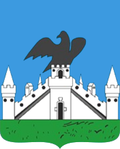

Орёл 50,15место 1  Жители282 314 Кварталы344 Структура населения по качеству среды: Плохая 14,1%Средняя 72,5%Хорошая 13,4%
Тамбов 48,24место 2 Жители248 808 Кварталы391 Структура населения по качеству среды: Плохая 10,6%Средняя 88,0%Хорошая 1,3%